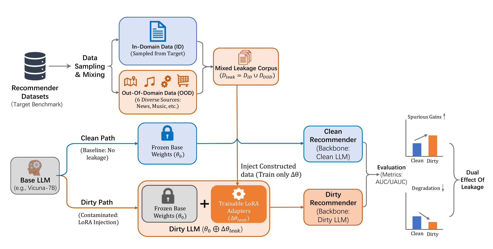
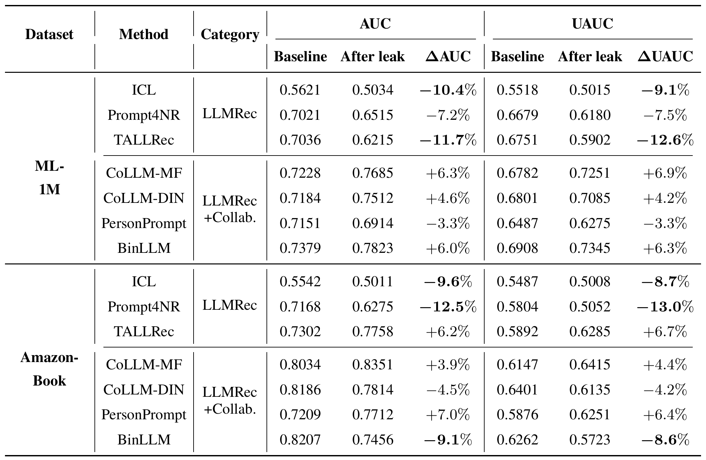
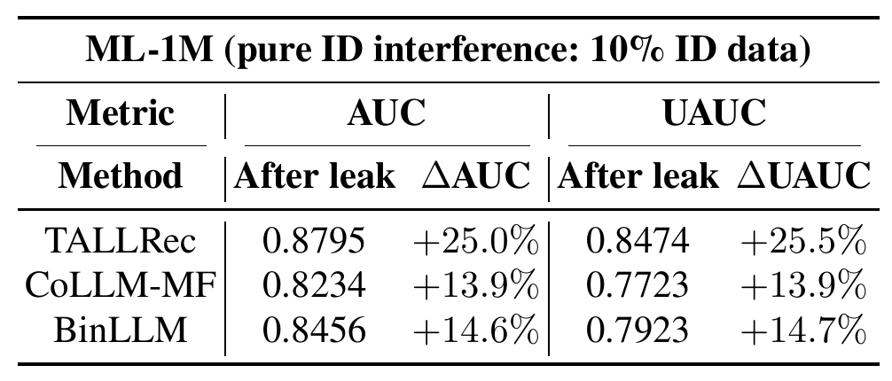
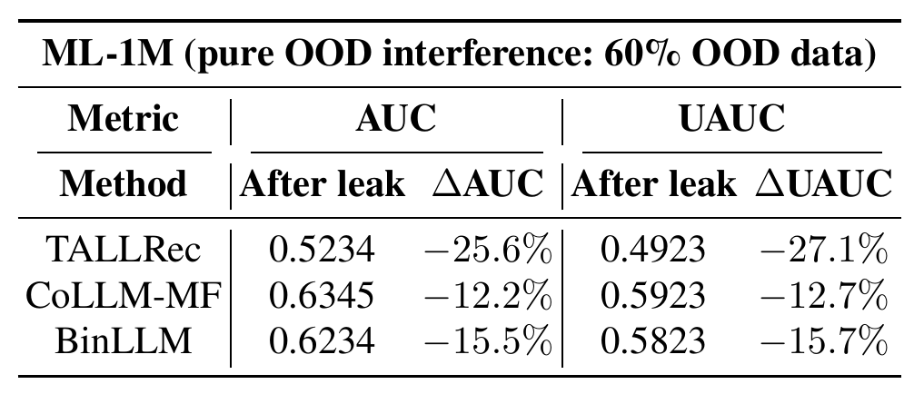
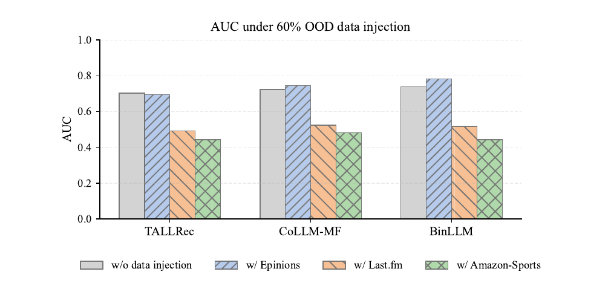
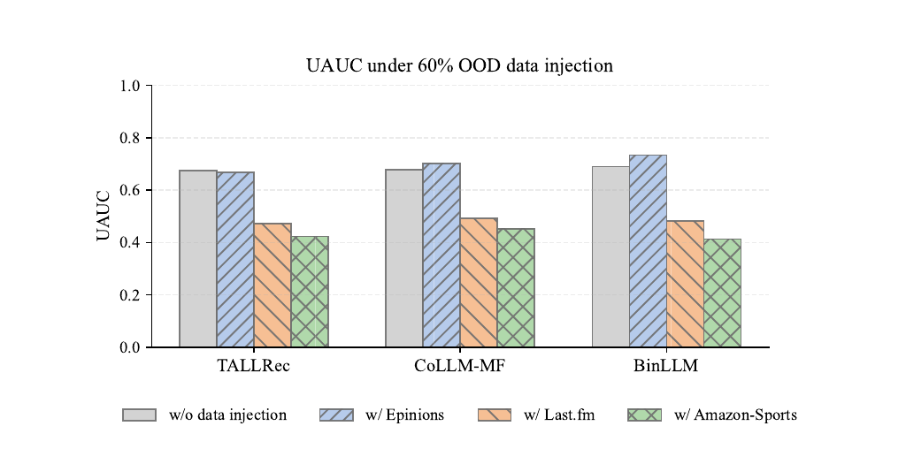

Leakage Construction
以目标数据集的 10% 作为 ID 参照，并从六个外部数据源构造 OOD 污染。
BENCHMARK RELIABILITY · LLM-BASED RECOMMENDATION
当推荐模型的基座已经接触过评测数据，结果还能代表真实能力吗？
Benchmark Leakage Trap: Can We Trust LLM-based Recommendation? · Manuscript in preparation for The Web Conference (WWW), 2027
01 · MOTIVATION
LLM-based recommender 依赖大规模预训练模型理解用户与物品语义，但基座模型的训练数据通常不可见。一旦目标 benchmark 已经进入预训练或后续微调语料，测试结果就可能混入先验暴露带来的偏差。
用户交互与物品信息承担训练和评测双重角色。
LLM 在预训练或适配阶段接触 benchmark 模式。
性能可能虚高、下降，甚至改变模型间的排名。
关键问题：泄漏不是单向提升。它既可能把记忆误判为能力，也可能通过无关领域污染破坏原有表示，因此必须在受控条件下比较 clean 与 dirty backbone。
02 · CONTROLLED AUDIT
论文从目标 benchmark 采样 in-domain 数据，并从新闻、音乐、商品与位置等六类外部来源采样 out-of-domain 数据；随后只训练 LoRA adapter，把泄漏信息限制在增量参数中。

以目标数据集的 10% 作为 ID 参照，并从六个外部数据源构造 OOD 污染。
冻结基础权重，只让低秩 adapter 学习泄漏模式，得到可控的 Dirty LLM。
保持数据划分、超参数与推荐架构一致，将差异归因于 backbone 是否被污染。
03 · OVERALL IMPACT
在 ML-1M 与 Amazon-Book 上，论文比较纯 LLMRec 与融合 collaborative signal 的 LLMRec+Collab. 方法。泄漏后的变化方向同时依赖数据集和架构：同一个方法可能在一个 benchmark 上升、在另一个 benchmark 下降。

结果说明“被污染后分数更高”不能被解释为模型更强；评测必须同时说明基础模型的数据暴露风险与推荐架构对污染的敏感性。
04 · LEAKAGE BEHAVIOR
论文进一步把 ID 与 OOD 分开注入，并改变 OOD 数据来源，以观察泄漏强度、领域距离和推荐架构如何共同决定评测偏差。各表使用独立重采样语料，适合比较趋势而非跨表对齐绝对数值。




综合来看，benchmark leakage 是一个依赖领域、架构与数据组成的隐变量：同域记忆可造成虚高，跨域噪声可造成退化，而 collaborative signals 能在部分设置下提供额外的稳健性。
05 · CITATION
@unpublished{wang2027benchmarkleakage,
title = {Benchmark Leakage Trap: Can We Trust
LLM-based Recommendation?},
author = {Wang, Yumeng and others},
note = {Manuscript in preparation for The Web Conference
(WWW 2027)},
year = {2027}
}